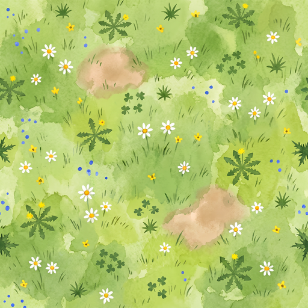
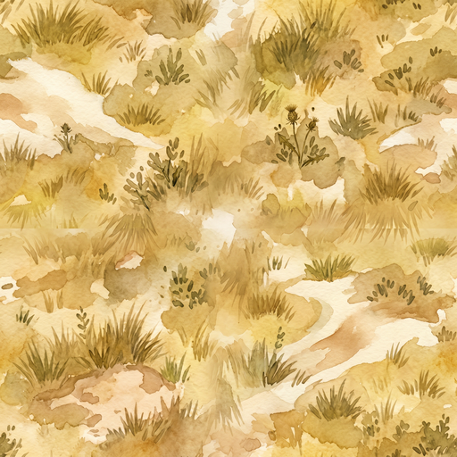
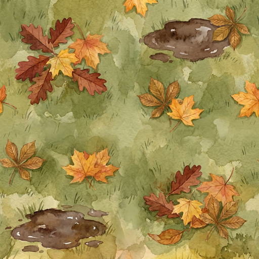
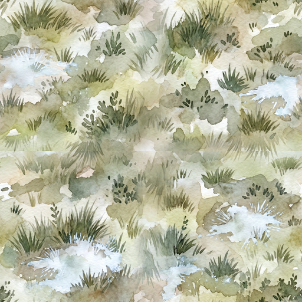

1. A.R.C. main building — front-elevation re-commission
Manus task
aivHHfkk5AQgHGXpopZc2V · 120 credits · 768×768 transparent PNG✗ v1 (isometric — wrong)

3/4 oblique view — two faces visible. Violated Rule 7 of
docs/manus-sprite-rules.md (front-elevation convention).✓ v2 (front-elevation — correct)

Strict head-on view. Side wings visible but face-on (no oblique angle). Paw-print emblem prominent on the front wall. "ANIMAL RESCUE CENTRE" hand-lettered on the entrance canopy. Streamline-moderne curved arch above the entrance. Rooftop dome aviary. Paw-print flag on the corner pole. Two pot plants flanking the door. Reads as a sticker-book figure facing the kid.
Installation: the v2 file replaces the v1 file at the existing path
scene-assets/reference/arc-site-tier1-2026-04-29/arc-main-building.png — every page that references it (map.html, intro.html, menu.html) now picks up the new front-elevation version automatically.
2. Seasonal undeveloped tiles — 4-piece commission
Manus task
6W9djkyne6eMjn4SUdbXYp · 213 credits · 4 × 512×512 PNG🌱 Spring

Lush green with yellow dandelions, purple thistles, plantain leaves, nettle clumps.
☀️ Summer

Yellowed dry turf, sand drifts blown in from the beach, parched scrubby tussocks.
🍂 Autumn

Clusters of oak / sycamore / horse-chestnut leaves + mud puddles on damp green ground.
❄️ Winter

Bare sparsely-tufted grass with white frost patches. Washed-out muted palette.
Wiring next: render undeveloped zones in the master plan + intro panels using the texture for the current in-game season (read from
Stylistic match: brushwork + warmth align with the existing
gardenWeather or timeProgress). Each zone gets a faint dashed "future development" outline around the seasonal tile so it reads as reserved land. Zone boundaries are bounded so the tiles don't need to repeat seamlessly.Stylistic match: brushwork + warmth align with the existing
texture-grass and texture-scrub Tier 1 tiles. Painted by the same hand.